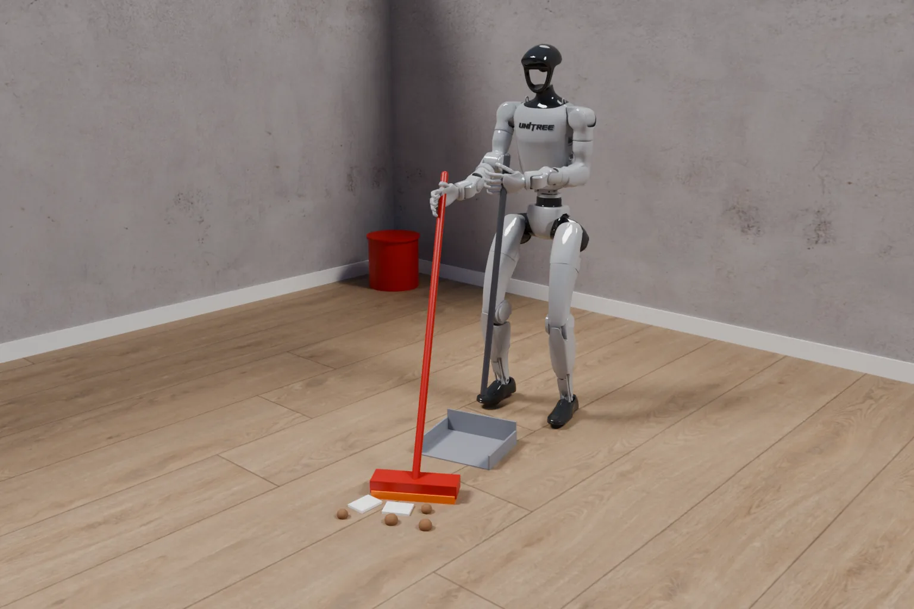
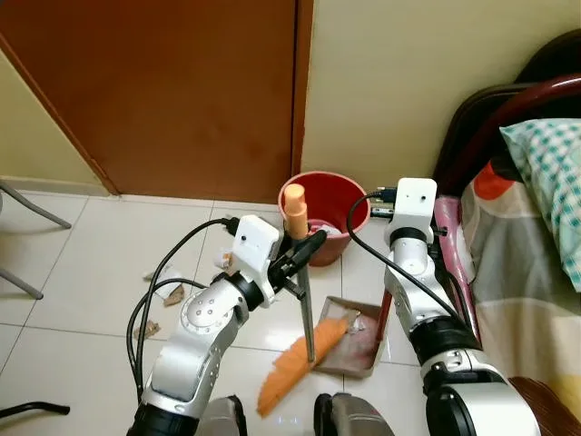
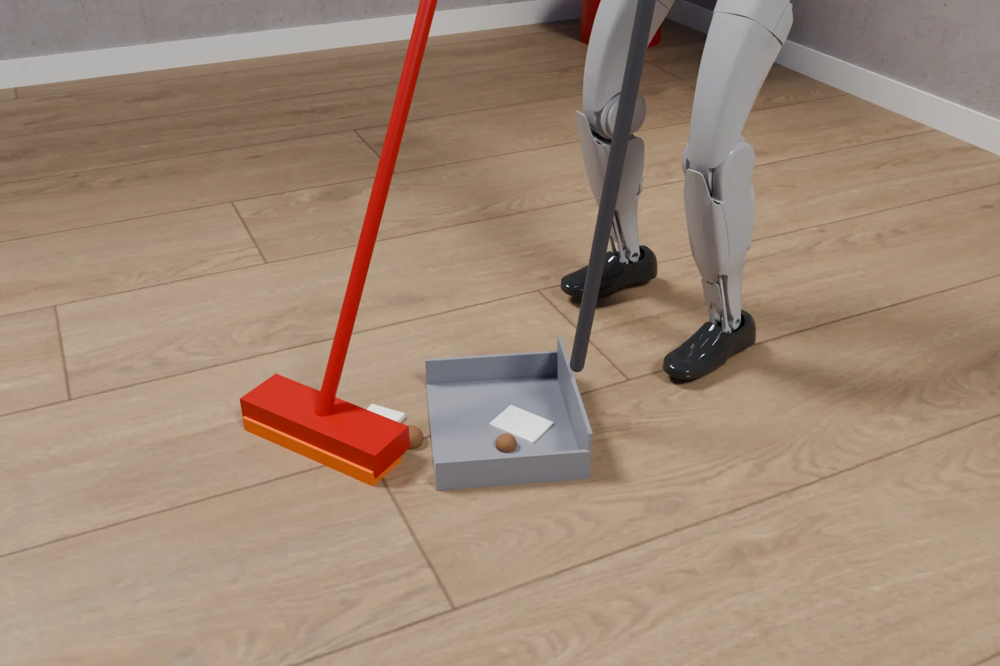
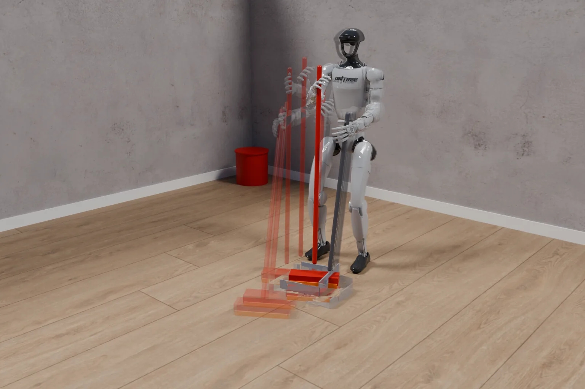

Agents
Intelligence is becoming physical.
From understanding the world to acting within it.
Agents guide ↗
BroomDustpanDebris
What it sees“Sweep the floor”See the room, find the tools, then act
The open foundation for physical AI
Physical intelligence that learns from experience and evolves through interaction with the world.
Agents
From understanding the world to acting within it.
Agents guide ↗
BroomDustpanDebris
What it sees“Sweep the floor”See the room, find the tools, then act
Worlds
Action brings feedback. Feedback drives learning.
Worlds guide ↗
Feet hold the floorBrush meets the floorDebris enters the panEvery contact is feedbackThe floor and the debris answer each stroke
Memory and skills
A foundation for experience to accumulate and capabilities to grow.
Skills guide ↗
Earlier strokesThis strokeSkill: sweep the floor ✓Learned from real demonstrations
Hang keys on a hook
Set the table
Restock the fridge
Experience accumulatesEach stroke is kept and reused
Experience becomes capability. Capability keeps evolving.
From building worlds to improving skills, see the foundations of self-improvement in action.
Describe a robot workspace, refine its layout through conversation, and explore the generated simulation in Studio.
Full demo & walkthrough ↗Improve a sorting program through experience, verify it, and reuse the skill in new layouts.
Full demo & walkthrough ↗“Stack the purple block on the green block.” The agent turns an instruction into robot actions in simulation.
Full demo & walkthrough ↗Keep successful actions and lessons for future tasks, with a record of where they came from.
Memory docs ↗Agents use experience to propose and test improvements. Each verified advance becomes the starting point for the next cycle.
Physical RSI docs ↗Hylo Research
Studies of agents, memory and reusable skills, with the evidence and limits behind each result.
A recorded sorting experiment follows development, independent verification and later skill calls.
Read the study →Paired comparisons show where recall improves outcomes and where it adds no measurable benefit.
Read the study →Reference policies evaluated under a shared protocol, with historical versions kept separate.
Explore results →Run your first simulation. Follow the quickstart from setup to evaluating and improving an agent.
Create a scene with the robots, objects and tasks you want to explore.
World building guide ↗Write a robot task program, test its behaviour and refine it through experience.
Program development guide ↗Compare agents on the same tasks and check whether a change improves performance.
Evaluation guide ↗